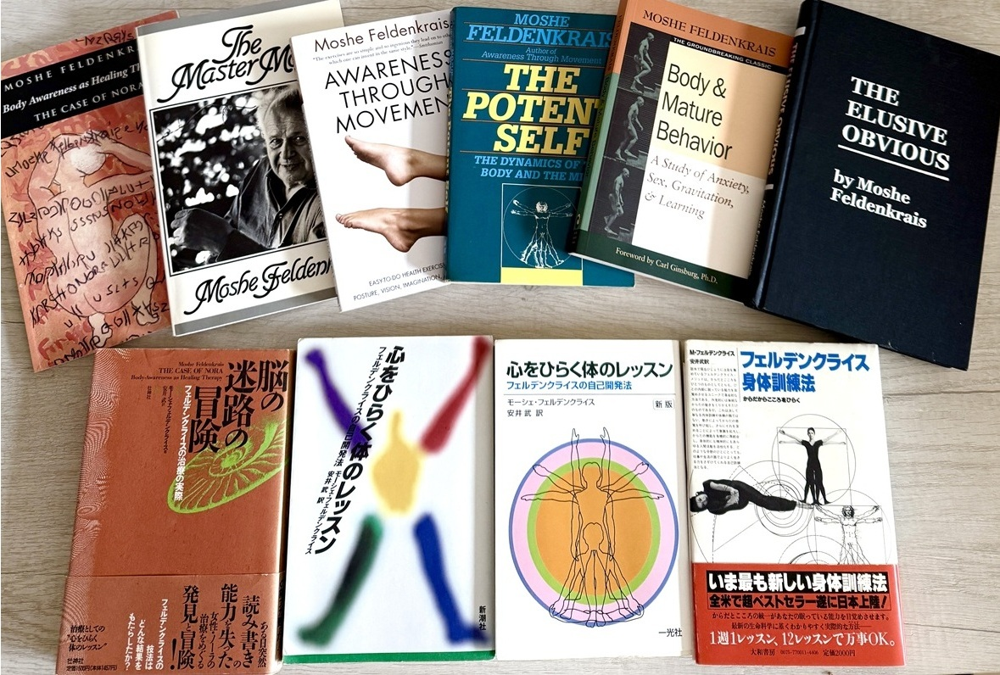

肩の力が抜けない 呼吸が浅い 体がなんだか重い
その原因が 実は自分でも気づいていない
体と心の使い方の「習慣」にあるとしたら どうでしょう
フェルデンクライスメソッドは、動きを通して学ぶ方法です。ストレッチでも、マッサージでも、体を鍛えることでもありません。ゆっくりと、優しく、心地よく動きながら、今、自分の体で何が起きているかに注意を向けていく。ただそれだけのことから、体は驚くほど変わっていきます。
正しくやろうとしなくていい。ただ注意を向けるだけ。それだけで変化は訪れます。
フェルデンクライスメソッドは、モシェ・フェルデンクライス（1904–1984）という一人の人物が編み出した方法です。
彼は、物理学者であり、技術者でした。パリのソルボンヌで学び、物理学の博士号を得て、当時の最先端の研究所で働いた科学者です。同時に、柔道家でもありました。パリで柔道の創始者・嘉納治五郎と出会い、その勧めで柔道を深めていきます。ヨーロッパでいち早く黒帯を取得した一人であり、パリに柔道クラブを設立しました。科学と、身体の技。この二つを深く生きた人でした。
彼が自らの方法を編み出すきっかけになったのは、古い膝の怪我でした。若い頃サッカーで痛めた膝が、後年になって悪化します。医師からは手術を勧められましたが、その成功は確かではありませんでした。
そこで彼は、手術に頼るのではなく、自分の体を観察することを選びます。どう動けば痛みが少ないのか。どう動けば、また歩けるようになるのか。物理学者としての知識と、柔道で培った身体への感覚を頼りに、ごくわずかな動きを、幾度も、注意深くたどっていきました。
この探究のなかで彼が見出したのは、一つの身体の部分は、他のすべてと関わり合って動いているということ。そして、動きを通して自分自身を観察することで、人は新しい動き方を——ひいては、新しい自分のあり方を——学び直せるということでした。
やがてこの方法は、多くの人に知られていきます。なかでも、イスラエルの初代首相ダビド・ベン=グリオンが、長年の腰痛を抱えてフェルデンクライスのもとを訪れたことはよく知られています。70歳を超えた首相が、レッスンを重ねた末に浜辺で逆立ちをしてみせた——その姿は、この方法が持つ可能性を、鮮やかに物語るものでした。
こうして受け継がれてきたのが、フェルデンクライスメソッドです。それは、一人の科学者が、自らの体を実験室として見出した、学びの方法だったのです。

フェルデンクライスメソッドに関する書籍はたくさん出版されていますが、まずはフェルデンクライス博士が書いたものを読んでみることをおすすめします。訳本なので読みづらさはあるかもしれませんが、フェルデンクライスメソッドの哲学に触れられることになると思います。
| 原題 | 年 | 邦訳（安井武 訳） |
|---|---|---|
| Body and Mature Behavior | 1949 | ── |
| Awareness Through Movement | 1972 | フェルデンクライス身体訓練法 大和書房 1982 |
| The Case of Nora | 1977 | 脳の迷路の冒険 壮神社 1991 |
| The Elusive Obvious | 1981 | ── |
| The Master Moves | 1984 | 心をひらく体のレッスン 新潮社 1988・一光社 2001 |
| The Potent Self | 1985 | ── |
日本で初めて紹介されたもので、その理論と実際のレッスンの両方を知ることができます。
フェルデンクライスワークス札幌では、この方法を、グループレッスン、オンラインレッスン、そして個人セッションのかたちで提供しています。
オンラインレッスンなら、お住まいの場所を問わず、ご自宅にいながら受けていただけます。必要なのは、床に横になれるわずかなスペースだけ。画面の前で、自分のペースで、静かに動きをたどる時間です。
対面でのグループレッスンでは、広いスタジオで、その場の空気を感じながら動きます。日常から少し離れて、自分の体だけに向き合う時間です。個人セッションもご用意しています。
年齢や体の状態にかかわらず、どなたでも始められます。運動が得意である必要はありません。むしろ、「力を抜くのが苦手」「体が動かしにくい」と感じている方にこそ、試していただきたい方法です。
はじめてで、少し不安のある方へ。まずは気軽に、LINEからご相談ください。ご質問におこたえしながら、あなたに合ったレッスンをご案内します。
レッスンの詳しい内容、日程や料金、よくあるご質問については、こちらのページでご覧いただけます。